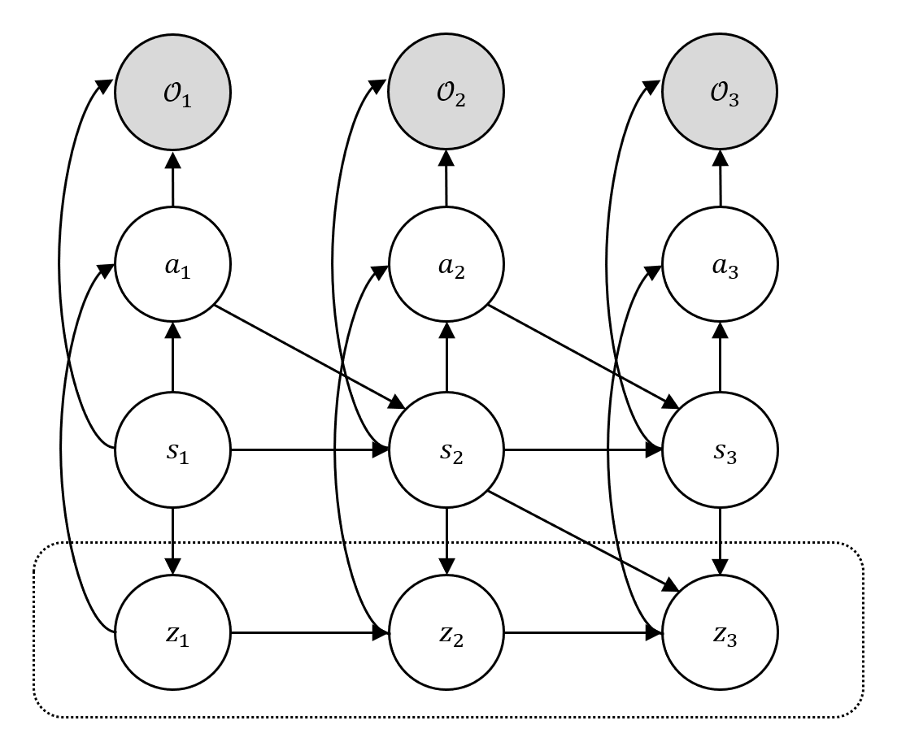
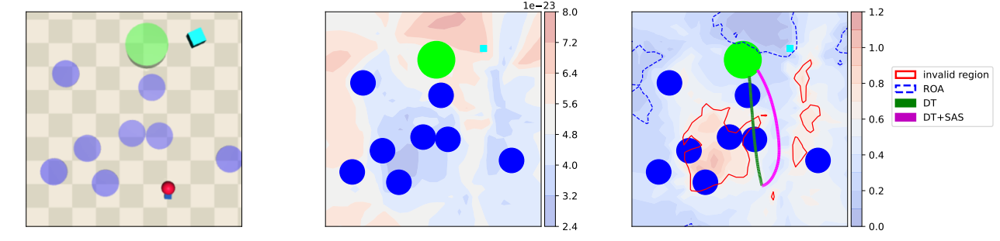

Offline reinforcement learning (RL) agents often fail when deployed, as the gap between training datasets and real environments leads to unsafe behavior. To address this, we present SAS (Self-Alignment for Safety), a transformer-based framework that enables test-time adaptation in offline safe RL without retraining. In SAS, the main mechanism is self-alignment: at test time, the pretrained agent generates several imagined trajectories and selects those satisfying the Lyapunov condition. These feasible segments are then recycled as in-context prompts, allowing the agent to realign its behavior toward safety while avoiding parameter updates.
In effect, SAS turns Lyapunov-guided imagination into control-invariant prompts, and its transformer architecture admits a hierarchical RL interpretation where prompting functions as Bayesian inference over latent skills. Across Safety Gymnasium and MuJoCo benchmarks, SAS consistently reduces cost and failure while maintaining or improving return.
SAS interprets transformer-based RL as a hierarchical policy, where prompting amounts to Bayesian inference over latent high-level skills. We reformulate the Lyapunov stability condition through occupancy measures estimated from offline data, and cast safety verification as maximizing the log-likelihood of two binary observables Ut and Vt.

Hierarchical RL as probabilistic inference: latent skills zt, the optimality variable Ot, and observables encoding safety conditions.

SAS dodges hazards by steering trajectories toward the control-invariant set RSASG (blue regions).
Across Safety Gymnasium, MuJoCo, and Bullet-Safety-Gym benchmarks, applying +SAS on top of a Decision Transformer (DT) or Constrained Decision Transformer (CDT) backbone reduces cost and failure by up to 2× while maintaining or improving return — all without any additional training.
@inproceedings{
han2026lyapunovguided,
title={Lyapunov-Guided Self-Alignment: Test-Time Adaptation for Offline Safe Reinforcement Learning},
author={Seungyub Han and Hyung Jjn Kim and Jungwoo Lee},
booktitle={The 29th International Conference on Artificial Intelligence and Statistics},
year={2026},
url={https://openreview.net/forum?id=GPNwYOQECX}
}